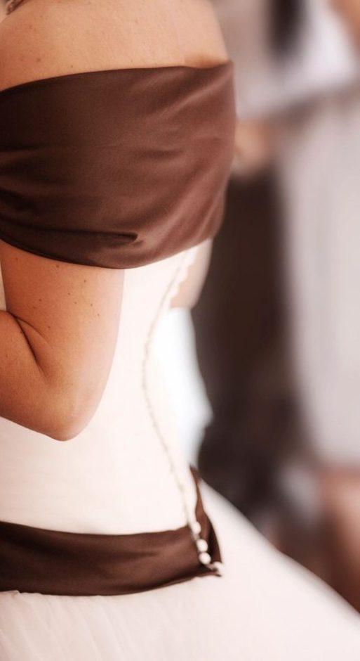

Ana sayfa · Beden rehberi
Beden rehberi: ölçünüzü doğru alın
Abiyede beden, kalıba ve kumaşa göre değişir. Bu yüzden beden numarasından önce doğru alınmış birkaç ölçü işinizi kolaylaştırır: göğüs, bel, basen ve belden yere boy.
Bu sayfadaki tablo genel bir referanstır; Lara Abiye'nin ya da herhangi bir markanın beden tablosu değildir. Kesin beden için ölçülerinizi mağazaya iletin.

Temsili görselTerzi mankeninde ölçü noktaları
Bir ölçüye dokunun; mankende nereden geçtiğini görün, nasıl alınacağını okuyun.
Göğüs çevresi
Mezurayı göğsün en dolgun noktasından, kolların altından ve sırttan yere paralel geçirin. Sıkmadan, nefes verirken okuyun.
İpucu: Davette giyeceğiniz sütyenle ölçün; farklı bir sütyen ölçüyü birkaç santim değiştirebilir.
Bel çevresi
Belin en ince yerinden, çoğunlukla göbek deliğinin biraz üstünden ölçün. Karnınızı içeri çekmeyin, nefesinizi tutmayın.
İpucu: Yana doğru eğildiğinizde oluşan kıvrım, gerçek bel hattınızı gösterir.
Basen çevresi
Ayaklarınız bitişik dururken kalçanın en geniş noktasından, yere paralel ölçün.
İpucu: Aynada yandan bakarak mezuranın arkadan aşağı düşmediğini kontrol edin.
Omuz genişliği
Bir omuz başından diğerine, sırtın üst kısmından ölçün. Omuz başı, kolunuzu yana kaldırdığınızda oluşan çukurun hemen üstündeki kemiktir.
İpucu: Bu ölçüyü tek başına almak zordur; bir yakınınızdan yardım isteyin.
Kol boyu
Kolunuz hafifçe bükülüyken omuz başından bileğe kadar ölçün. Uzun kollu ve kapalı modellerde belirleyicidir.
İpucu: Kolunuz düz dururken ölçerseniz uzun kol, bükünce kısa kalabilir.
Belden yere boy
Bel hattından yere kadar, dik dururken ölçün. Uzun abiyede etek boyunu bu ölçü belirler.
İpucu: Topuksuz ölçün, giyeceğiniz topuğun yüksekliğini ayrıca not edin; ölçü defteri ikisini toplar.
Ölçmeden önce
Birkaç basit kural, ölçünün birkaç santim şaşmasını önler. Abiyede bu santimler, elbisenin bel dikişinin yerini ve yakanın oturuşunu değiştirir.
Ölçüleri iki kez alın; aradaki fark birkaç santimi geçiyorsa üçüncü kez ölçün. Sonuçları santimetre olarak not edin.
- Esnemeyen bir terzi mezurası kullanın; metal metre ya da ip ölçüyü bozar.
- İnce bir kıyafetle ya da iç çamaşırıyla ölçün; kalın kazak santimler ekler.
- Mezura yere paralel olsun, arkada kıvrılmasın.
- Sıkmayın: mezuranın altına bir parmak sığacak kadar bırakın.
- Dik ve rahat durun; karnınızı çekmeyin, omuzlarınızı kaldırmayın.
- Yardım alın: omuz ve boy ölçüsünü bir başkası daha doğru alır.
Ölçü defteri ve genel beden tablosu
Ölçülerinizi yazın; genel tabloda size yakın satırlar işaretlensin. Bilgiler yalnız bu cihazda kalır ve ana sayfadaki öneri formuna kendiliğinden eklenir.
Ölçülerimi gönder
Mesaj, girdiğiniz ölçülerle kendiliğinden yazılır.
| Beden | Göğüs | Bel | Basen |
|---|---|---|---|
| 36 | 84–87 | 66–69 | 92–95 |
| 38 | 88–91 | 70–73 | 96–99 |
| 40 | 92–95 | 74–77 | 100–103 |
| 42 | 96–99 | 78–81 | 104–107 |
| 44 | 100–103 | 82–85 | 108–111 |
| 46 | 104–108 | 86–90 | 112–116 |
| 48 | 109–113 | 91–95 | 117–121 |
| 50 | 114–118 | 96–100 | 122–126 |
| 52 | 119–123 | 101–105 | 127–131 |
| 54 | 124–128 | 106–110 | 132–136 |
| 56 | 129–133 | 111–115 | 137–141 |
Provaya yanınıza alın
Abiyeyi o gecenin koşullarında denemek, mağazadaki provanın en değerli kısmı.
Uzun abiyede etek boyu ayakkabıya göre okunur; topuksuz denediğiniz bir elbise topukla kısa, topukla denediğiniz bir elbise düz ayakkabıyla uzun kalabilir. Bel–yer ölçünüzü ve topuk yüksekliğinizi ölçü defterine yazarsanız ikisini birlikte görürsünüz.
- Davette giyeceğiniz ayakkabı ya da aynı yükseklikte bir topuk.
- Uygun iç çamaşırı: straplez sütyen, korse ya da toparlayıcı; elbisenin oturuşunu değiştirir.
- Davetin renk bilgisi: davetiyenin ya da gelinin renginin fotoğrafı.
- Takacağınız takılar: kolye ve küpe yaka seçimini etkiler.
- Şal ya da ceket: elbiseyle birlikte nasıl durduğunu görün.
- Ölçü notlarınız: ölçü defterindeki değerler telefonunuzda dursun.
Ölçüleriniz hazırsa, davetinizi yazın
Ölçü defterine yazdıklarınız öneri formunda sizi bekliyor.